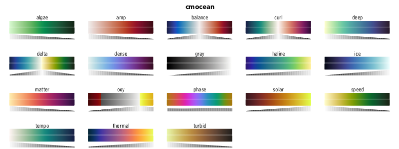
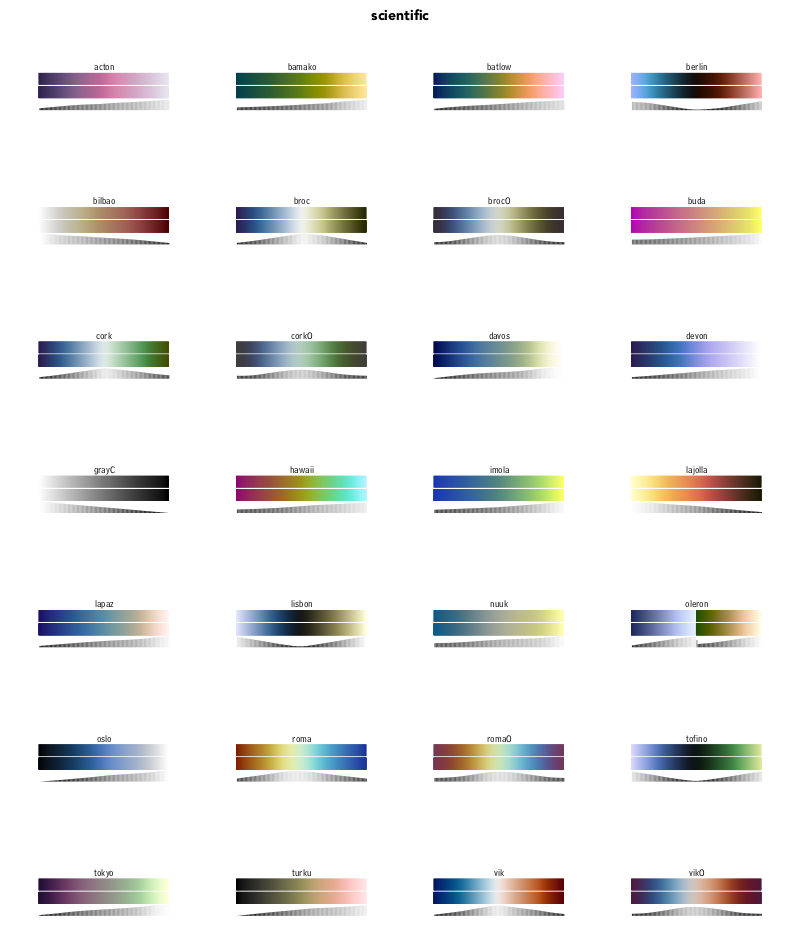
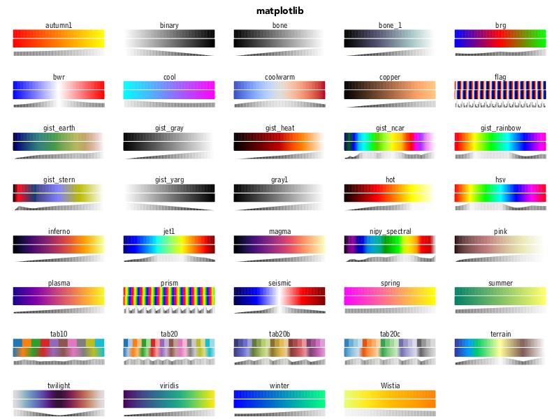
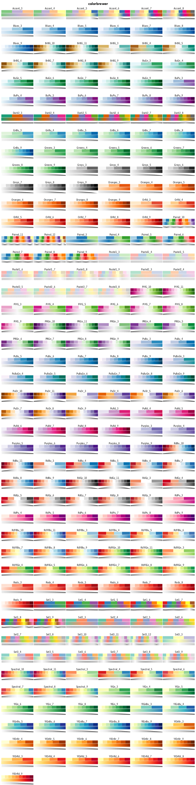
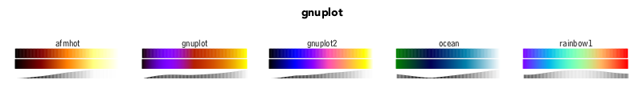
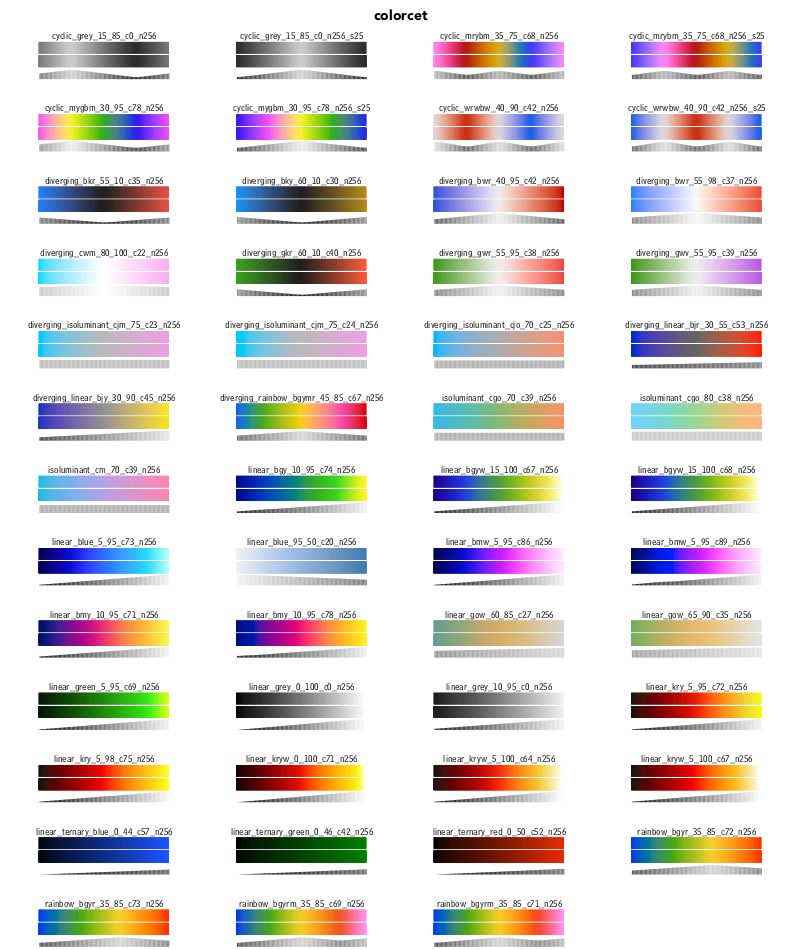
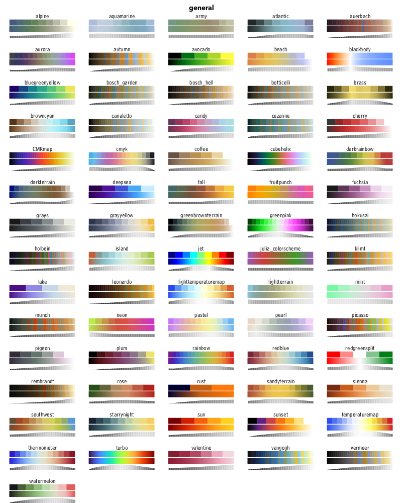
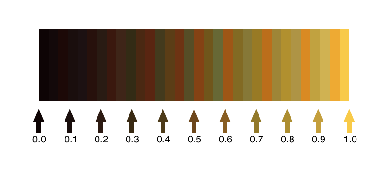
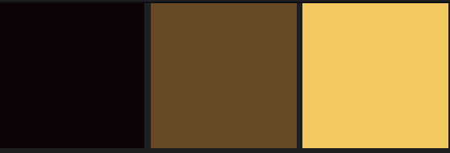

Basics
ColorScheme objects
When you start using ColorSchemes.jl, it loads a set of pre-defined ColorSchemes, and stores them in a dictionary called colorschemes.
A ColorScheme is a Julia object which contains:
- an array of colors
- a string defining a category
- a string that can contain descriptive notes
To access one of these built-in colorschemes, use its symbol:
julia> ColorSchemes.leonardoIf you're using Juno, for example, the colors in the colorscheme should appear in the Plots window.
Otherwise, you'll see the colors listed as RGB values:
32-element Array{RGB{Float64},1}:
RGB{Float64}(0.0548203,0.016509,0.0193152)
RGB{Float64}(0.0750816,0.0341102,0.0397083)
RGB{Float64}(0.10885,0.0336675,0.0261204)
RGB{Float64}(0.100251,0.0534243,0.0497594)
...
RGB{Float64}(0.620187,0.522792,0.216707)
RGB{Float64}(0.692905,0.56631,0.185515)
RGB{Float64}(0.681411,0.58149,0.270391)
RGB{Float64}(0.85004,0.540122,0.136212)
RGB{Float64}(0.757552,0.633425,0.251451)
RGB{Float64}(0.816472,0.697015,0.322421)
RGB{Float64}(0.933027,0.665164,0.198652)
RGB{Float64}(0.972441,0.790701,0.285136)You can access the array of colors as:
ColorSchemes.leonardo.colorsBy default, the colorschemes aren't imported. But to avoid using the prefixes, you can import the ones that you want:
julia> import ColorSchemes.leonardo
julia> leonardo
32-element Array{RGB{Float64},1}:
RGB{Float64}(0.0548203,0.016509,0.0193152)
RGB{Float64}(0.0750816,0.0341102,0.0397083)
RGB{Float64}(0.10885,0.0336675,0.0261204)
RGB{Float64}(0.100251,0.0534243,0.0497594)
...
RGB{Float64}(0.757552,0.633425,0.251451)
RGB{Float64}(0.816472,0.697015,0.322421)
RGB{Float64}(0.933027,0.665164,0.198652)
RGB{Float64}(0.972441,0.790701,0.285136)You can reference a single value of a scheme once it's loaded:
leonardo[3]
-> RGB{Float64}(0.10884977211887092,0.033667530751245296,0.026120424375656533)Or you can 'sample' the scheme at any point between 0 and 1 using get():
get(leonardo, 0.5)
-> RGB{Float64}(0.42637271063618504,0.28028983973265065,0.11258024276603132)Base.get — Functionget(cscheme::ColorScheme, x, rangescale)Returns a single color from the colorscheme.
get(cscheme::ColorScheme, inData :: Array{Number, 2}, rangescale=:clamp)
get(cscheme::ColorScheme, inData :: Array{Number, 2}, rangescale=(minVal, maxVal))Return an RGB array of colors generated by applying the colorscheme to the 2D input data.
If rangescale is :clamp the colorscheme is applied to values between 0.0-1.0, and values outside this range get clamped to the ends of the colorscheme.
Else, if rangescale is :extrema, the colorscheme is applied to the range minimum(indata)..maximum(indata).
Examples
img = get(colorschemes[:leonardo], rand(10,10)) # displays in Juno Plots window, but
save("testoutput.png", img) # you'll need FileIO or similar to do this
img2 = get(colorschemes[:leonardo], 10.0 * rand(10, 10), :extrema)
img3 = get(colorschemes[:leonardo], 10.0 * rand(10, 10), (1.0, 9.0))
# Also works with PerceptualColourMaps
using PerceptualColourMaps # warning, installs PyPlot, PyCall, LaTeXStrings
img4 = get(PerceptualColourMaps.cmap("R1"), rand(10,10))get(cs::ColorScheme, g::Color{T,1} where T<:Union{Bool, AbstractFloat, FixedPoint})Return the color in cs that corresponds to the gray value g.
The colorschemes dictionary
The ColorSchemes module automatically provides a number of predefined schemes. All the colorschemes are stored in an exported dictionary, called colorschemes.
colorschemes[:summer] |> show
ColorScheme(
ColorTypes.RGB{Float64}[
RGB{Float64}(0.0,0.5,0.4),
RGB{Float64}(0.01,0.505,0.4),
RGB{Float64}(0.02,0.51,0.4),
RGB{Float64}(0.03,0.515,0.4),
...
RGB{Float64}(1.0,1.0,0.4)],
"matplotlib",
"sampled color schemes, sequential linearly-increasing shades of green-yellow")Pre-defined schemes
The schemes are drawn in three ways: first, showing each defined color; next, a continuous blend obtained using get() with values ranging from 0 to 1 (stepping through the range 0:0.001:1); and finally a luminance graph shows how the luminance of the scheme varies as the colors change.
It's generally agreed (search the web for "Rainbow colormaps considered harmful") that you should choose colormaps with smooth linear luminance gradients.
cmocean
From "Beautiful colormaps for oceanography": cmocean

scientific
From Scientific colormaps

matplotlib
From matplot

colorbrewer
From ColorBrewer

gnuplot
From GNUPlot

colorcet
"collection of perceptually accurate colormaps"

general and miscellaneous

ColorSchemes.colorschemes — ConstantcolorschemesAn exported dictionary of pre-defined colorschemes:
colorschemes[:summer] |> show
ColorScheme(
ColorTypes.RGB{Float64}[
RGB{Float64}(0.0,0.5,0.4), RGB{Float64}(0.01,0.505,0.4), RGB{Float64}(0.02,0.51,0.4), RGB{Float64}(0.03,0.515,0.4),
...To choose a random ColorScheme:
using Random
scheme = first(Random.shuffle!(collect(keys(colorschemes))))To choose a random ColorScheme:
using Random
scheme = first(Random.shuffle!(collect(keys(colorschemes))))Finding colorschemes
Use the findcolorscheme() function to search through the pre-defined colorschemes. The string you provide can occur in the colorscheme's name, in the category, or in the notes. It's interpreted as a case-insensitive regular expression.
julia> findcolorscheme("magen")
colorschemes containing "magen"
spring (notes) sampled color schemes, linearl...
cool (notes) sampled color schemes, linearl...
hsv (notes) sampled color schemes, red-yel...
found 3 results for "magenta"julia> findcolorscheme("cmocean")
colorschemes containing "cmocean"
oxy (category) cmocean
matter (category) cmocean
dense (category) cmocean
balance (category) cmocean
thermal (category) cmocean
tempo (category) cmocean
gray (category) cmocean
speed (category) cmocean
turbid (category) cmocean
solar (category) cmocean
ice (category) cmocean
haline (category) cmocean
algae (category) cmocean
amp (category) cmocean
deep (category) cmocean
delta (category) cmocean
curl (category) cmocean
phase (category) cmocean
found 18 results for "cmocean"ColorSchemes.findcolorscheme — Functionfindcolorscheme(str)Find all color schemes matching str. str is interpreted as a regular expression (case-insensitive).
To read the notes of built-in colorscheme cscheme:
colorschemes[:cscheme].notesIf you prefer, you can 'roll your own' search.
[k for (k, v) in ColorSchemes.colorschemes if occursin(r"colorbrew"i, v.category)]
265-element Array{Symbol,1}:
:BuPu_6
:Spectral_4
:RdYlGn_5
⋮
:BrBG_8
:Oranges_4Make your own ColorScheme
You can easily make your own ColorScheme objects by building an array:
using Colors
grays = ColorScheme([RGB{Float64}(i, i, i) for i in 0:0.1:1.0])Give it a category or some added notes if you want:
grays = ColorScheme([RGB{Float64}(i, i, i) for i in 0:0.1:1.0],
"my useful schemes", "just some dull grey shades")although this won't end up in the colorschemes dictionary.
Another example, starting with a two-color scheme, then building a gradient from the first color to the other.
myscheme = ColorScheme([Colors.RGB(1.0, 0.0, 0.0), Colors.RGB(0.0, 1.0, 0.0)],
"custom", "twotone, red and green")
ColorScheme([get(myscheme, i) for i in 0.0:0.01:1.0])Another way is to use loadcolorscheme() function:
loadcolorscheme(:mygrays, [RGB{Float64}(i, i, i) for i in 0:0.1:1.0],
"useful schemes", "just some dull grey shades")and that will be added (temporarily).
julia> findcolorscheme("dull")
colorschemes containing "dull"
mygrays (notes) just some dull grey shades...
found 1 result for "dull"If you want to make more advanced ColorSchemes, use linear-segment dictionaries or indexed lists, and use functions to generate color values, see the make_colorscheme() function in the ColorSchemeTools.jl package.
Continuous color sampling
You can access the specific colors of a colorscheme by indexing (eg leonardo[2] or leonardo[5:end]). Or you can sample a ColorScheme at a point between 0.0 and 1.0 as if it were a continuous range of colors:
get(leonardo, 0.5)returns
RGB{Float64}(0.42637271063618504,0.28028983973265065,0.11258024276603132)
The colors in the predefined ColorSchemes are usually sorted by LUV luminance, so this often makes sense.
You can use get() with index data in arrays to return arrays of colors:
julia> get(leonardo, [0.0, 0.5, 1.0])
3-element Array{RGB{Float64},1} with eltype ColorTypes.RGB{Float64}:
RGB{Float64}(0.05482025926320272,0.016508952654741622,0.019315160361063788)
RGB{Float64}(0.42637271063618504,0.28028983973265065,0.11258024276603132)
RGB{Float64}(0.9724409077178674,0.7907008712807734,0.2851364857083522)
julia> simg = get(leonardo, rand(10, 16));
julia> using FileIO
julia> save("mosaic.png", simg)
Matplotlib compatibility
Most of the color schemes in Matplotlib are available. The following list gives a general picture.
using ColorSchemes
# https://matplotlib.org/examples/color/colormaps_reference.html
matplotlibcmaps = Dict(
:perceptuallyuniformsequential => [
:viridis, :plasma, :inferno, :magma],
:sequential => [
:Greys_9, :Purples_9, :Blues_9, :Greens_9, :Oranges_9, :Reds_9,
:YlOrBr_9, :YlOrRd_9, :OrRd_9, :PuRd_9, :RdPu_9, :BuPu_9,
:GnBu_9, :PuBu_9, :YlGnBu_9, :PuBuGn_9, :BuGn_9, :YlGn_9],
:sequential2 => [
:binary, :gist_yarg, :gist_gray, :gray, :bone, :pink,
:spring, :summer, :autumn, :winter, :cool, :Wistia,
:hot, :afmhot, :gist_heat, :copper],
:diverging => [
:PiYG_11, :PRGn_11, :BrBG_11, :PuOr_11, :RdGy_11, :RdBu_11,
:RdYlBu_11, :RdYlGn_11, :Spectral_11, :coolwarm, :bwr, :seismic],
:cyclical => [
:twilight, :twilight_shifted, :hsv],
:qualitative => [
:Pastel1_9, :Pastel2_8, :Paired_11, :Accent_8,
:Dark2_8, :Set1_9, :Set2_8, :Set3_12,
:tab10, :tab20, :tab20b, :tab20c],
:miscellaneous => [
:flag, :prism, :ocean, :gist_earth, :terrain, :gist_stern,
:gnuplot, :gnuplot2, :CMRmap, :cubehelix, :brg, :hsv,
:gist_rainbow, :rainbow, :jet, :nipy_spectral, :gist_ncar]
)
for (k, v) in matplotlibcmaps
println("$(rpad(k, 12)) $(length(v))")
for cs in v
try
c = ColorSchemes.colorschemes[cs]
catch
println("\t$(rpad(cs, 12)) not currently in stock")
end
end
endcyclical 3
twilight_shifted not currently in stock
sequential 18
qualitative 12
sequential2 16
perceptuallyuniformsequential 4
diverging 12
miscellaneous 17